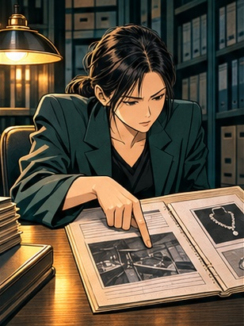
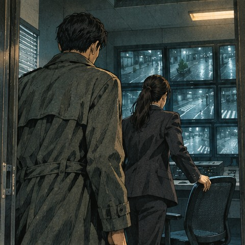
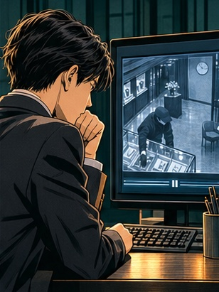
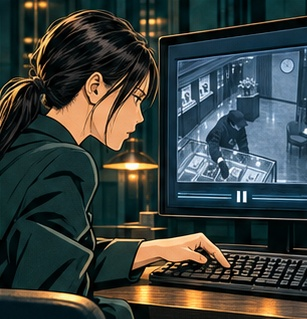
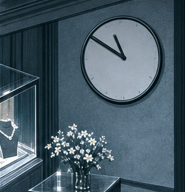
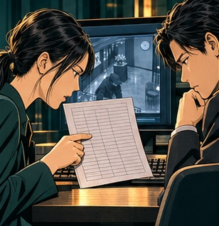
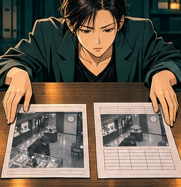

漫画版
第十話「七分進んだカメラ」

翌朝・資料室
最終報告の写真に結びつく資料を、事件番号から探します。
番号から戻ろう。元の記録と、配られた版を出してくれ。
最初は宝石店の侵入事件です。防犯映像が残っています。
1 / 4
二人は映像を再生できる席に移った。


棚を越えたところで止めます。
朝倉が一時停止を押した。映像が止まり、店の奥まで見渡せた。

宝石店・防犯カメラの表示 02:17:30
捜査線上の上野には、二時十五分からアリバイがある。映像どおりなら、侵入はその後です。
2 / 4

待って。映像の時刻表示とは別に、右奥の壁にも時計がある。

画面右奥・時計の針を拡大

当時の聞き取りでは、壁は電波時計。カメラは手で時刻を合わせていたそうよ。
3 / 4

表示は二時十七分三十秒。壁は二時十分ごろ。約七分ずれてる。訂正票も二時十分ね。
二時十分はアリバイが始まる前。上野を外す根拠が崩れました。
上野さんを外した理由は七分で消えた。誰が入ったかは、別に確かめよう。
- 映像の表示
- 02:17:30
- 壁時計と訂正票
- 02:10ごろ
4 / 4